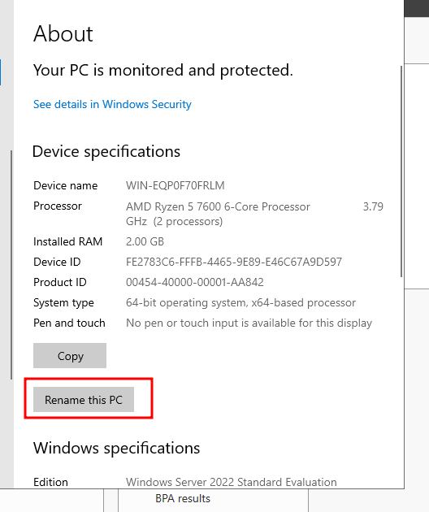
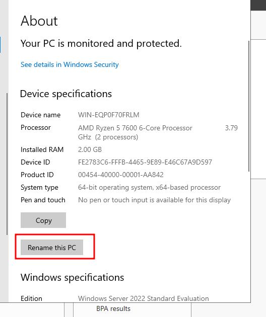

Finding Users
Usually you would find users through OSINT, looking at web pages, phonebook.cz, LinkedIn, Facebook, Twitter or whatever it is called at this time.
For this area we will not be looking at OSINT, we will be looking at different ways to find users from PowerShell or through Linux due to insecure practices.
.Net Framework
If you have access to a machine there are multiple ways to find users on a domain, one of those ways is using the .net framework. This will work on both machines and servers.
net user /domain
To see all users and some useful information about them we can run the following command. You will receive an error at the end due to how PowerShell thinks that there is a user, user.
# Get a list of all users in the domain (replace with local if needed)
$users = (net user /domain) -split '\r?\n' | Where-Object { $_ -match '^\S' -and $_ -notmatch '^User accounts for' -and $_ -notmatch '^-+' -and $_ -notmatch "The command completed successfully" }
# Flatten the list if multiple usernames are found on one line
$users = $users -join ' ' -split '\s+' # This will split all usernames into a single list
# Loop through each user and print useful information
foreach ($user in $users) {
Write-Host "`nFetching information for user: $user"
# Get user info (account status, password expiry, last logon, etc.)
$userInfo = net user $user /domain 2>&1 # Redirecting errors to handle any missing user info gracefully
# Check if userInfo is empty or null, indicating that the user might not exist
if (-not $userInfo -or $userInfo -match "does not exist") {
Write-Host "Error: $user does not exist or is not valid."
continue
}
# Extract relevant information (with additional null checks)
$isActive = $null
$lastLogon = $null
$passwordExpires = $null
$groups = $null
# Try to extract each piece of information with a null check
$isActive = ($userInfo | Select-String -Pattern "Account active" | ForEach-Object { $_.Line -replace "Account active\s+", "" }).Trim()
$lastLogon = ($userInfo | Select-String -Pattern "Last logon" | ForEach-Object { $_.Line -replace "Last logon\s+", "" }).Trim()
$passwordExpires = ($userInfo | Select-String -Pattern "Password expires" | ForEach-Object { $_.Line -replace "Password expires\s+", "" }).Trim()
$groups = ($userInfo | Select-String -Pattern "Group" | ForEach-Object { $_.Line -replace "Group\s+", "" }).Trim()
# Ensure we set "N/A" if information is missing
if (-not $isActive) { $isActive = "N/A" }
if (-not $lastLogon) { $lastLogon = "N/A" }
if (-not $passwordExpires) { $passwordExpires = "N/A" }
if (-not $groups) { $groups = "N/A" }
# Output the extracted information
Write-Host "User: $user"
Write-Host "Account Active: $isActive"
Write-Host "Last Logon: $lastLogon"
Write-Host "Password Expires: $passwordExpires"
Write-Host "Groups: $($groups -join ', ')"
}
Now that we have some good information on users, lets look at dsquery.
DSQuery may not be used on all machines, usually only servers have dsquery commands in them.
dsquery user -limit 0 | dsget user -dn | ForEach-Object { ($_ -split ',')[0] -replace 'CN=', '' }
Notice above that I picked the Server Eval ISO file, and told the system to use that image file. This will boot much like when you load an ISO into a desktop and then boot from USB.
Powering On and Installation
Now, power on the machine and start pressing the spacebar to ensure it boots from USB or disc. If you miss this step, wait for the blue screen, power off, and retry.
Once booted, click Next, then Install Now.

Custom Installation
Select Custom Install and click Next to start the installation.
Administrator Password
Choose an administrator password and make sure to remember it. Click Finish.
Installing VMWare Tools
Click on Install Tools at the bottom of the page. If you miss this step, navigate to the D:/ drive to install VMWare tools.
Final Steps
After installing tools, change the server name. Congratulations! You have successfully set up a Windows Server.
 

Next Module
In the next module, we will create a Domain Controller using this installed server.